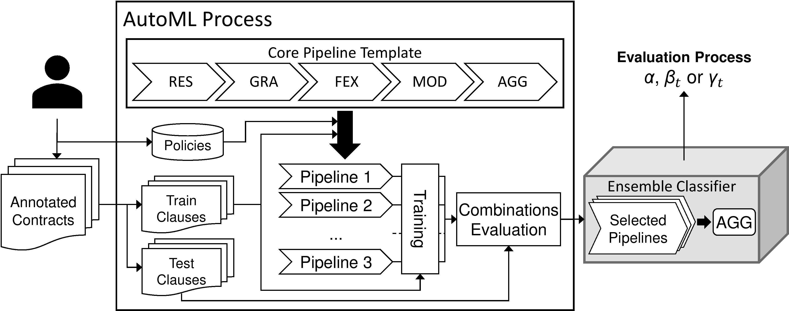
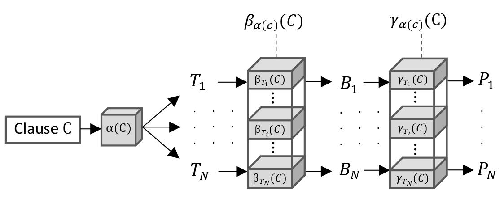

ANA Process¶
ANA aims to analyze contracts by providing feedbacks for each clause. Determining the acceptebility of a clause can be seen as both a text classification and an anomaly detection problem. To achieve this, ANA relies on a hierarchical composition of models trained through an AutoML process that extracts the best combination of classifiers. Hence, ANA is flexible and suitable to any domain 1.
As proven in previous works in the litterature, including Polisis [HFL+18] and Claudette [LPC+19], using such a hierarchy enables specific, thus accurate, classifiers. Conseuqently, ANA was designed as a three steps process:
Type recognition (\(\alpha\)): Identifies the type of the clause, for instance: billing, confidentiality or termination.
Anomaly detection (\(\beta\)): According to the type of the clause, determines if the clause is acceptable toward the current policies.
Anomaly identification (\(\gamma\)): If the clause is detected as anomalous, identifies the violated policies.
For each phase, ANA trains and uses ensemble classifiers. An ensemble classifier is a set of sub-classifier whose results are aggregated into as single one through an aggragation function, typically a voting procedure. Each sub-classifier focuses on a restricted set of data, features or class. The principle of ensemble classifiers is to use a set of parallel specific classifiers, typically, a multi-class classifier can be decomposed as a set of binary classifiers. This enables a more accurate classification [LPC+19].
To set those ensemble classifiers, ANA relies of an AutoML process, that not only determines the best classifier configuration, but also the best combination of sub-classifiers (within ensemble classifiers). In the end, ANA uses a hierarchy (\(\alpha\), \(\beta\) et \(\gamma\)) of set of sub-classifers (ensemble classifier).
Training¶
{kind=link}
The training process aim to generate the evaluation pipeline from a set of examples. As input, it relies on clauses annotated per type and anomalies (and per granularity), as well as a set of policies, formalised as SWRL rules. Both are supposed provided by a business expert. Examples clauses are divided into a training set and testing set.
Based on these data, ANA uses it AutoML process to instantiate, evaluate and select combinations of ML pipelines with various configurations. Pipelines are instantiated from a core pipeline template. A pipeline has the following configurable steps:
Restriction (RES): Selection of a subset of training data from their labels.
Granularity (GRA): Granularity considered (typically full clause or sentences).
Feature Extraction (FEX): Textual feature extraction to use (count vectorizer, hashing vectorizer, tf-idf or doc2vec).
Model and Hyperparameter (MOD): Selection and auto-configuration (with TPOT) of a ML model. SVM can be used by default for faster training.
Agregation (AGG): Aggragation procedure for small granules (for example, if sentences were used, procedure to assemble them back to clause scale). It mostly uses election procedures.
The AutoML process instantiates multiple pipelines at once and evaluates them on the test set. Results of each pipeline are aggregated and metrics are measured. The combination of pipeline that achieves the highest f1_score (other metrics can be seleced in the code) is selected. A corresponding ensemble classifier is created and saved.
ANA’s AutoML process is applied to each phase \(\alpha\), \(\beta\) and \(\gamma\) with minor specificities: Phase \(\alpha\), that determines the type of the clause, mainly considers simple combinations with various granularities. One ensemble classifier is trained for \(\alpha\). Phase \(\beta\) training is performed for each type of clause. Thus, training is perform on a reduced dataset. Several combinations, that include binary classifiers, are considered. Phase \(\gamma\) aims to classify the anomaly, and consiquently only uses anomalous clauses fro training. Again, training is performed for each type of clause and complex combinations are explored. Both \(\beta\) and \(\gamma\) are composed of multiples trained ensemble classifiers.
The resulting ensemble classifiers can then be used for evaluating clauses of new contracts.
Evaluation¶
{kind=link}
A contract is provided as a set of clauses, ANA analyses each of them separately: the evaluation process uses a clause as input.
The clause evaluation naturally follows the phases \(\alpha\), \(\beta\) and \(\gamma\). First, the clause type is determined by \(\alpha\) ensemble classifier. This classification can be refined with a key word search on the title of the clause. According to the inferred type, the matching ensemble classifier of \(\beta\) is selected and applied. This ensemble classifier assert the abnormality of the clause. Finally, if the clause is anomalous, i.e. unacceptable in its current state, the matching ensemble classifier of \(\gamma\) is selected and applied. This last classifier provides the violated policies.
In this end, the evaluation process outputs the type of the clause, the acceptability of the clause, and the consequently violated policies.
References¶
- HFL+18
H. Harkous, K. Fawaz, R. Lebret, F Schaub, K.G. Shin, and K. Aberer. Polisis: automated analysis and presentation of privacy policies using deep learning. 27th USENIX Security Symposium, USENIX Security 2018, Baltimore, MD, USA., pages 531–548, August 2018.
- LPC+19(1,2)
M. Lippi, P. Palka, G Contissa, F. Lagioia, H.W. Micklitz, G. Sartor, and P. Torroni. Claudette: an automated detector of potentially unfair clauses in online terms of service. Artificial Intelligence and Law, 2019.
Footnotes
- 1
This assertation remains to be evaluated.